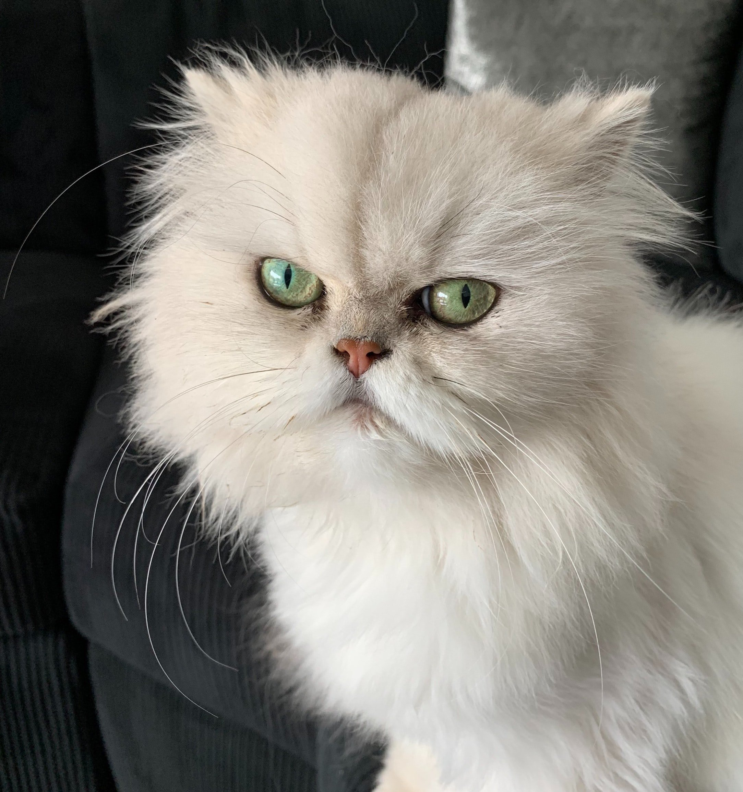
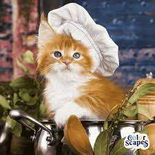
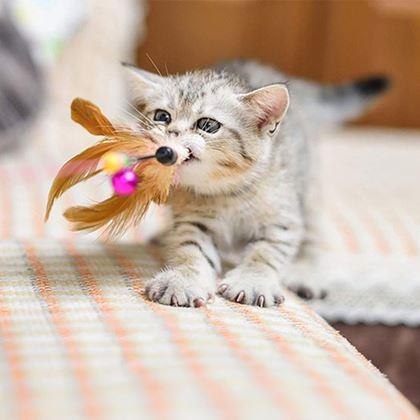

La Cafeneaua Miau oferim nu doar cafea bună, ci și dragoste pentru animale. Iată cele trei pisici pe care le-am salvat și care acum ne înveselesc fiecare zi!

Luna a fost salvată în 2021 de pe stradă, în fața cafenelei. Are 3 ani și este foarte jucăușă, adoră să se ascundă printre cutiile de cafea.

Mocha a fost găsită în 2020 în spatele unei prăjitorii de cafea. Are aproape un an și iubește să doarmă pe tejghea lângă espressoare.

Latte a venit la noi în 2022, abandonată lângă o cutie cu pahare. Are 5 luni și este extrem de iubăreață, stă mereu lângă clienți pentru mângâieri.